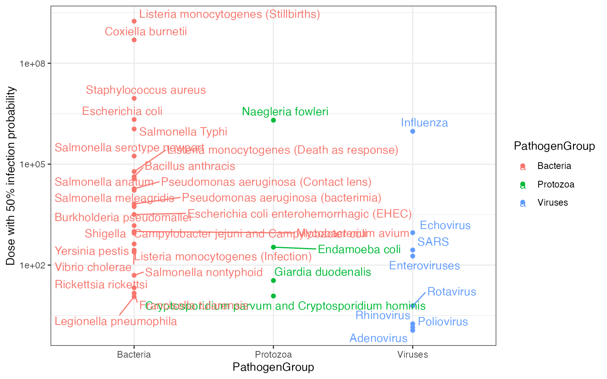

Dose-response modelling
Michael Rustler
2022-06-08
Source:vignettes/doseresponse.Rmd
doseresponse.Rmd1. Load the required R packages
##
## Attaching package: 'dplyr'## The following objects are masked from 'package:stats':
##
## filter, lag## The following objects are masked from 'package:base':
##
## intersect, setdiff, setequal, union2. Dose-response database from QMRAwiki
2.1 Download
dr.db <- kwb.qmra::dr.db_download()## Rows: 37 Columns: 18
## ── Column specification ────────────────────────────────────────────────────────
## Delimiter: ","
## chr (12): Agent, Best fit model*, Optimized parameter(s), Host type, Agent s...
## dbl (6): LD50/ID50, # of doses, k, alpha, N50, PathogenID
##
## ℹ Use `spec()` to retrieve the full column specification for this data.
## ℹ Specify the column types or set `show_col_types = FALSE` to quiet this message.2.2 Visualise
Database:
dr.db2 <- dr.db %>% dplyr::select(PathogenGroup,
PathogenName,
`Agent strain`,
`Best fit model*`,
`Optimized parameter(s)`,
`LD50/ID50`,
`Host type`,
Route,
`Dose units`,
Response,
Reference) %>%
dplyr::arrange(PathogenGroup, PathogenName)
caption <- "Table 1: Best-fit dose-response parameters ([QMRAwiki, 2016](http://qmrawiki.canr.msu.edu/index.php/?title=Table_of_Recommended_Best-Fit_Parameters))"
knitr::kable(dr.db2,caption = caption )| PathogenGroup | PathogenName | Agent strain | Best fit model* | Optimized parameter(s) | LD50/ID50 | Host type | Route | Dose units | Response | Reference |
|---|---|---|---|---|---|---|---|---|---|---|
| Bacteria | Bacillus anthracis | Vollum | exponential | k = 1.65E-05 | 4.20e+04 | guinea pig | inhalation | spores | death | Druett 1953 |
| Bacteria | Burkholderia pseudomallei | KHW,316c | beta-Poisson | a = 3.28E-01 , N50 = 5.43E+03 | 5.43e+03 | C57BL/6 mice and diabetic rat | intranasal,intraperitoneal | CFU | death | Liu, Koo et al. 2002 and Brett and Woods 1996 |
| Bacteria | Campylobacter jejuni and Campylobacter coli | strain A3249 | beta-Poisson | a= 1.44E-01 , N50 = 8.9E+02 | 8.90e+02 | human | oral (in milk) | CFU | infection | Black et al 1988 |
| Bacteria | Coxiella burnetii | phase I Ohio | beta-Poisson | a= 3.57E-01 , N50 = 4.93E+08 | 4.93e+08 | C57BL/1OScN mice | intraperitoneal | PFU | death | Williams et al, 1982 |
| Bacteria | Escherichia coli | EIEC 1624 | beta-Poisson | a = 1.55E-01 , N50 = 2.11E+06 | 2.11e+06 | human | oral (in milk) | CFU | positive stool isolation | DuPont et al. (1971) |
| Bacteria | Escherichia coli enterohemorrhagic (EHEC) | EHEC O157:H7, strain 86-24 | exponential | k=2.18E-04 | 3.18e+03 | pig | oral (in food) | CFU | shedding in feces | Cornick & Helgerson (2004) |
| Bacteria | Francisella tularensis | SCHU S-4 | exponential | k = 4.73E-02 | 1.46e+01 | monkeys | inhalation | CFU | death | Day and Berendt, 1972 |
| Bacteria | Legionella pneumophila | Philadelphia 1 | exponential | k = 5.99E-02 | 1.16e+01 | guinea pig | inhalation | CFU | infection | Muller et al. (1983) |
| Bacteria | Listeria monocytogenes (Death as response) | F5817 | exponential | k = 1.15E-05 | 6.05e+04 | C57B1/6J mice | oral | CFU | death | Golnazarian, Donnelly et al. 1989 |
| Bacteria | Listeria monocytogenes (Infection) | F5817 | beta-Poisson | a = 2.53E-01 , N50 = 2.77E+02 | 2.77e+02 | C57Bl/6J mice | oral | CFU | infection | Golnazarian |
| Bacteria | Listeria monocytogenes (Stillbirths) | NA | beta-Poisson | a = 4.22E-02 , N50 = 1.78E+09 | 1.78e+09 | pooled | oral | CFU | stillbirths | Smith, Williams2007 |
| Bacteria | Mycobacterium avium | sub sp. Paratuberculosis Bovine | exponential | k = 6.93E-04 | 1.00e+03 | deer | oral | CFU | infection | O’Brien et al(1976) |
| Bacteria | Pseudomonas aeruginosa (bacterimia) | ATCC 19660 | exponential | k = 1.05E-04 | 6.61e+03 | Swiss webster mice (5day old) | injected in eyelids | CFU | death | Hazlett, Rosen et al. 1978 |
| Bacteria | Pseudomonas aeruginosa (Contact lens) | NA | beta-Poisson | a = 1.9E-01 , N50 = 1.85E+04 | 1.85e+04 | white rabbit | contact lens | CFU | corneal ulceration | Lawin-Brussel et al. (1993) |
| Bacteria | Rickettsia rickettsi | R1 and Sheila Smith | beta-Poisson | a= 7.77E-01 , N50 = 2.13E+01 | 2.13e+01 | Pooled data | NA | CFU | morbidity | Saslaw and Carlisle 1966 and Dupont, Hornick et al. 1973 |
| Bacteria | Salmonella anatum | strain I | beta-Poisson | a= 3.18E-01 , N50 = 3.71E+04 | 3.71e+04 | human | oral, with eggnog | CFU | positive stool culture | McCullough and Elsele,1951 |
| Bacteria | Salmonella meleagridis | strain I | beta-Poisson | a= 3.89E-01 , N50 = 1.68E+04 | 1.68e+04 | human | oral, with eggnog | CFU | infection | McCullough and Eisele 1951,2 |
| Bacteria | Salmonella nontyphoid | strain 216 and 219 | beta-Poisson | a= 2.1E-01 , N50 = 4.98E+01 | 4.98e+01 | mice | intraperitoneal | CFU | death | Meynell and Meynell,1958 |
| Bacteria | Salmonella serotype newport | Salmonella newport | exponential | k = 3.97E-06 | 1.74e+05 | human | oral | CFU | infection | McCullough and Elsele,1951 |
| Bacteria | Salmonella Typhi | Quailes | beta-Poisson | a = 1.75E-01 , N50 = 1.11E+06 | 1.11e+06 | human | oral, in milk | CFU | disease | Hornick et al. (1966),Hornick et al. (1970) |
| Bacteria | Shigella | 2a (strain 2457T) | beta-Poisson | a= 2.65E-01 , N50 = 1.48E+03 | 1.48e+03 | human | oral (in milk) | CFU | positive stool isolation | DuPont et al. (1972b) |
| Bacteria | Staphylococcus aureus | NA | exponential | k = 7.64E-08 | 9.08e+06 | human | subcutaneous | CFU/cm2 | infection | Rose and Haas 1999 |
| Bacteria | Vibrio cholerae | Inaba 569B | beta-Poisson | a= 2.50E-01 , N50 = 2.43E+02 | 2.43e+02 | human | oral (with NaHCO3) | CFU | infection | Hornick et al., (1971) |
| Bacteria | Yersinia pestis | CO92 | exponential | k = 1.63E-03 | 4.26e+02 | mice | intranasal | CFU | death | Lathem et al. 2005 |
| Protozoa | Cryptosporidium parvum and Cryptosporidium hominis | TAMU isolate | exponential | k = 5.72E-02 | 1.21e+01 | human | oral | oocysts | infection | Messner et al. 2001 |
| Protozoa | Endamoeba coli | From an infected human | beta-Poisson | a = 1.01E-01 , N50 = 3.41E+02 | 3.41e+02 | human | oral | Cysts | infection | Rendtorff 1954 |
| Protozoa | Giardia duodenalis | From an infected human | exponential | k = 1.99E-02 | 3.48e+01 | human | oral | Cysts | infection | Rendtorff 1954 |
| Protozoa | Naegleria fowleri | LEE strain | exponential | k = 3.42E-07 | 2.03e+06 | mice | intravenous | no of trophozoites | death | Adams et al. 1976 & Haggerty and John 1978 |
| Viruses | Adenovirus | type 4 | exponential | k = 6.07E-01 | 1.14e+00 | human | inhalation | TCID50 | infection | Couch, Cate et al. 1966 |
| Viruses | Echovirus | strain 12 | beta-Poisson | a = 1.06E+00 , N50 = 9.22E+02 | 9.22e+02 | human | oral | PFU | infection | Schiff et al.,1984 |
| Viruses | Enteroviruses | porcine, PE7-05i | exponential | k = 3.74E-03 | 1.85e+02 | pig | oral | PFU | infection | Cliver, 1981 |
| Viruses | Influenza | H1N1,A/California/10/78 attenuated strain, H3N2,A/Washington/897/80 attenuated strain | beta-Poisson | a = 5.81E-01 , N50 =9.45E+05 | 9.45e+05 | human | intranasal | TCID50 | infection | Murphy et al., 1984 & Murphy et al., 1985 |
| Viruses | Lassa virus | Josiah strain | exponential | k = 2.95E+00 | 2.35e-01 | guinea pig | subcutaneous | PFU | death | Jahrling et al., 1982 |
| Viruses | Poliovirus | type 1,attenuated | exponential | k = 4.91E-01 | 1.41e+00 | human | oral (capsule) | PD50 (mouse paralytic doses) | alimentary infection | Koprowski |
| Viruses | Rhinovirus | type 39 | beta-Poisson | a = 2.21E-01 , N50 = 1.81E+00 | 1.81e+00 | human | intranasal | TCID50 doses | infection | Hendley et al., 1972 |
| Viruses | Rotavirus | CJN strain (unpassaged) | beta-Poisson | a = 2.53E-01 , N50 = 6.17E+00 | 6.17e+00 | human | oral | FFU | infection | Ward et al, 1986 |
| Viruses | SARS | rSARS-CoV | exponential | k = 2.46E-03 | 2.82e+02 | mice hACE-2 and A/J | intranasal | PFU | death | DeDiego et al., 2008 & De Albuquerque et al., 2006 |
#DT::datatable(doseresponse, caption = caption)Dose response for all microbial parameters:
dr.model <- kwb.qmra::dr.db_model(dr.db = dr.db)
ggplot( dr.model, aes(x = dose,
y = infectionProbability,
col = PathogenGroup)) +
geom_point() +
scale_x_log10() +
theme_bw()Dose for all microbial parameters with 50% infection probability
## `summarise()` has grouped output by 'PathogenID', 'PathogenGroup'. You can
## override using the `.groups` argument.## Warning: `guides(<scale> = FALSE)` is deprecated. Please use `guides(<scale> =
## "none")` instead.

Figure 3: Dose for all microbial parameters with 50% infection probability